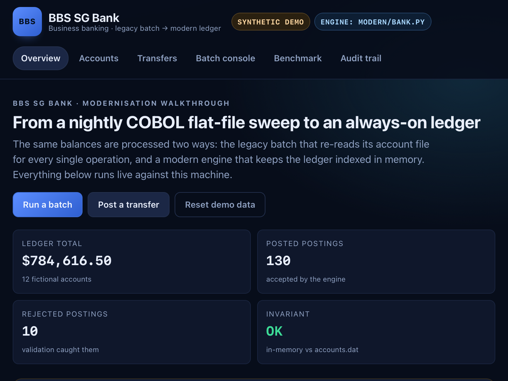
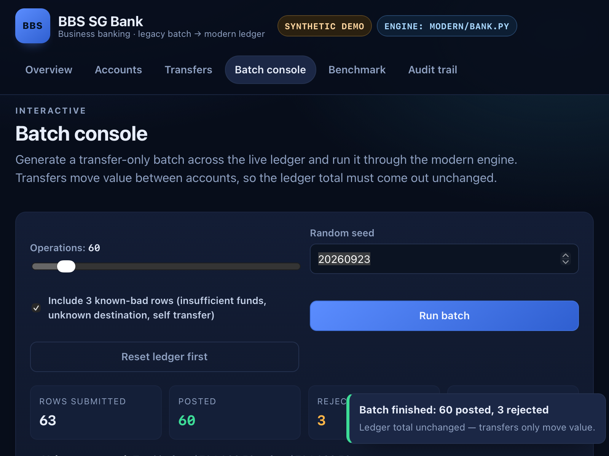
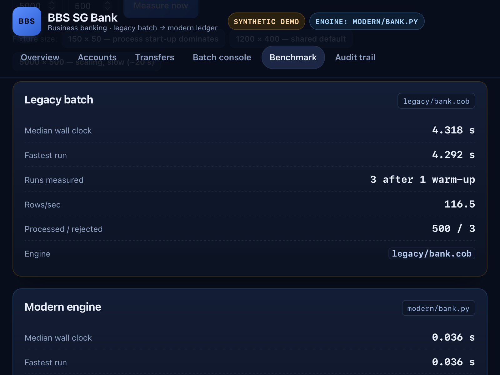
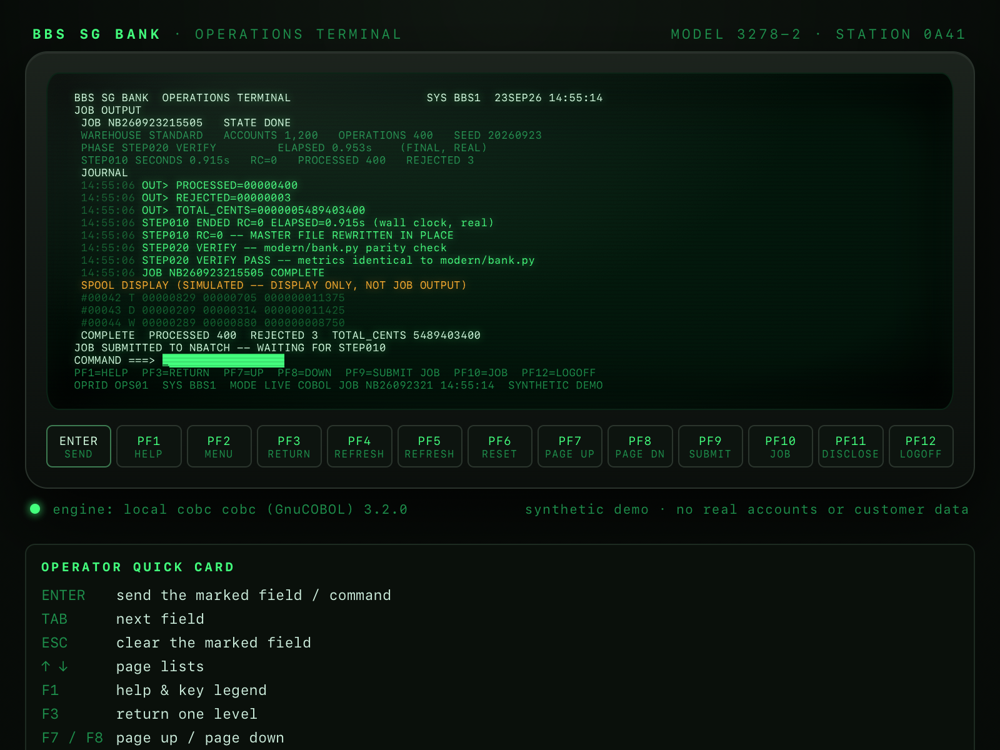

SF Enterprise Hackathon 2.0 · synthetic demo
BBS SG Bank
A nightly COBOL batch becomes an always-on ledger — same files, same rules, measured both ways.

127.0.0.1:8788 · live demo
01 · the nightly batch, before
Every operation re-reads the whole account file
accounts.dat
one file, re-read every row
Legacy COBOL opens the master file per operation, finds two accounts, then rewrites the whole file — three full traversals per accepted row.
row visits, 1,200 accounts × 400 operations
0
O(operations × accounts)
GnuCOBOL 3.2.0, compiled with cobc , running as a real subprocess.
02 · the replacement, after
Same rules, held in an in-memory index
accounts dict · integer cents O(1) lookup
legacy/bank.cob
172 lines
modern/bank.py
54 lines
Python standard library only. One read of accounts, one read of operations, one write — no temp file.

batch console · 63 rows · 60 posted · 3 rejected
03 · parity before speed
Byte-identical output, checked on every run
legacy/bank.cob · stdout
PROCESSED=00000400
REJECTED=00000003
TOTAL_CENTS=0000005489403400
accounts.dat byte-identical ✓
modern/bank.py · stdout
PROCESSED=00000400
REJECTED=00000003
TOTAL_CENTS=0000005489403400
✓ amount shape✓ kind in D/W/T✓ no self-transfer✓ source exists✓ destination exists✓ funds check
04 · measured on this machine
5,000 accounts, 500 operations
speedup
1×
median of three timed runs
Bars drawn to scale from scripts/evidence/benchmark-final-5000x500.txt ; the screenshot is a fresh rerun of the same fixture. Synthetic workload against a deliberately inefficient legacy design — a property of that access pattern, not a claim about COBOL in general.

fresh app rerun: 4.32 s → 0.036 s · 120× · byte-identical
05 · the legacy path, running live
Real COBOL, compiled and executed for each job

operator terminal · 127.0.0.1:8792
not a replay: the server runs cobc, then the job
1,200 accounts × 400 operations, preset M, seed 20260923.
06 · how the migration was run
Opsera Forge carried the pipeline
Assessment 57/100 · 10 findings, 3 high Intent problem + scope PRD & Spec exported Architecture before / after User stories 6 epics · 33 stories Testing 132 test cases
Forge artifacts are planning and review documents; the running COBOL and Python engines in this demo are hand-written and tested in the repository.
BBS SG Bank · modernization walkthrough
Legacy to modern, measured
28.6× · 1,200 × 400
115× · 5,000 × 500
108 tests passing
Synthetic demonstration: invented accounts and balances, no real customers, no real transactions, and no affiliation with any bank.
BBS SG Bank runs its ledger on a nightly COBOL
batch. This is the same bank, modernised.
The legacy program re-reads the whole account file for
every operation, then rewrites it for each one it accepts.
The replacement keeps the same rules in fifty-four lines of Python: accounts
indexed in memory, money held as integer cents, one read and one write per run.
Same input files, same validation, byte-identical
output. Only the access pattern changed.
Measured on this machine: five thousand accounts, five hundred operations. Four
point seven seconds becomes forty milliseconds. A hundred and fifteen times faster.
The operations terminal is not a replay. It compiles the original
COBOL and runs it live: nine tenths of a second for one small job.
Opsera Forge carried the migration: assessment, intent,
specification, architecture, user stories and test cases.
Legacy to modern, measured and reproducible. BBS SG Bank is a
synthetic demo, with no real accounts and no real customers.